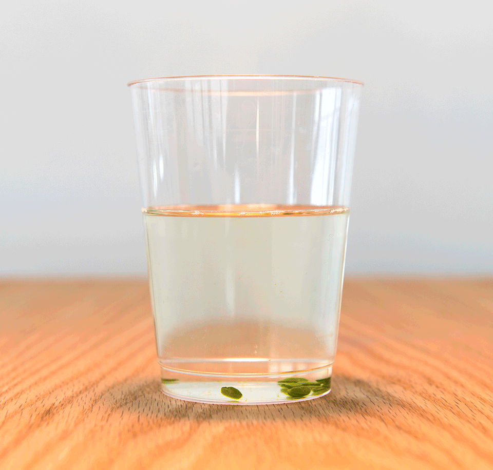

2.4 What Changes the Rate
Chapter 2.3 listed everything photosynthesis needs: light, water, carbon dioxide, and enzymes that work. That list is also a set of predictions. Take one away and the rate should fall; add more and it should rise — up to a point. This chapter tests that, with an experiment you can run on a spinach leaf and a hole punch.
From "what does it need" to "what is holding it back"
A process that needs several ingredients runs at the speed of whichever one is in shortest supply. Give it more of anything else and nothing happens. That scarcest ingredient is the limiting factor.
It is worth having a non-biological version in your head. A sandwich shop needs bread, filling and staff. If it runs out of bread at eleven o'clock, hiring three more staff at noon does absolutely nothing for the number of sandwiches sold — the bread is limiting. Deliver more bread and suddenly the staff matter again, and now they are limiting.
Photosynthesis has three obvious candidates:
- Light intensity. No light, no excited electrons, no ATP and no NADPH — so the Calvin cycle stops too.
- Carbon dioxide concentration. Only 0.04% of the air. Rubisco can only fix what reaches it.
- Temperature. Every step is run by enzymes. Cold molecules collide rarely; hot ones denature the enzyme entirely.
Notice that the first two behave differently from the third. More light or more CO₂ helps until something else becomes limiting, and then the curve flattens. More heat helps until the enzymes give way, and then the curve falls off a cliff. Keep that shape difference in mind; you will see both in the data.
Unit 1 established that enzymes are proteins folded into a particular shape, and that shape makes the active site. Heat shakes a protein apart — the same denaturing you met in 2.1 when the egg white set. A denatured enzyme does not work slowly. It does not work.
How you measure a rate you cannot see
Photosynthesis makes glucose, and you cannot watch glucose appear. But it also makes oxygen, and oxygen is a gas — which is measurable, if you are clever about it.
The leaf-disc floating assay works like this:
- Punch ten small discs out of a spinach leaf with a hole punch. Each contains all the layers you met in 2.2, air spaces included, which is why a leaf disc normally floats.
- Put them in a syringe with a little liquid, block the nozzle and pull the plunger back. The vacuum drags the air out of the leaf's spongy mesophyll and liquid takes its place. Release, repeat, and the discs sink. They are now waterlogged.
- Drop them into a beaker under a lamp. As the discs photosynthesise, oxygen collects in those same air spaces, the discs become less dense, and one by one they float back to the surface.
- Count how many have floated at the end of each minute for ten minutes.

Discs floated is a proxy for oxygen made, and oxygen made is a proxy for the rate of photosynthesis. Every measurement in biology is a proxy for something, and knowing what yours actually measures is half of understanding the result.
It is an imperfect proxy, and the imperfection is worth naming. The discs are also respiring the whole time, consuming some of the oxygen they make — so what you are really measuring is net oxygen production, photosynthesis minus respiration. That distinction becomes the whole story in 2.6.
One more design point. The bicarbonate solution in the beaker is there to supply carbon dioxide — dissolved sodium bicarbonate releases CO₂ into the water. Plain water is not CO₂-free, but it holds very little, so it makes a good low-CO₂ comparison.
Design it before you see the data
This is the order that matters, and it is the order the anchor guide uses. Naming the independent variable, the dependent variable and the control group after looking at a graph is a trivial exercise. Doing it beforehand is the actual skill in "planning and carrying out investigations", and the interactive below will not show you the data until you have done it.
All three experiments were really run, and the numbers you get are the real class results.
Leaf-disc lab
InteractiveTwo things about the controlled variables that are easy to get wrong.
In the CO₂ experiment, light is a controlled variable — the lamp must be the same distance from every beaker. In the light experiment, CO₂ is controlled — all three beakers get 1% bicarbonate. The thing that is the independent variable in one experiment is a controlled variable in the others. That is not a coincidence; it is the definition of a fair test.
And "same leaf" belongs on every list. Discs from a thick old leaf and a thin young one photosynthesise at different rates, and if you took your three sets from three different plants you could not tell that apart from the treatment.
What the three experiments actually showed
Read the graphs as steepness, not as endpoints. Most runs eventually reach ten discs; the interesting question is how fast.
Carbon dioxide
Plain water managed 4 discs in ten minutes and never reached half. At 0.5% bicarbonate half the discs were up by minute 4. At 1%, half were up by minute 2.5 and all ten by minute 5. More CO₂, faster photosynthesis — with the highest concentration running about five times the rate of plain water over the whole ten minutes.
Notice also that water was not zero. Water in contact with air always holds a little dissolved CO₂, so the discs were CO₂-starved rather than CO₂-free. A control group tells you the background, and the background is rarely nothing.
Light intensity
High light reached all ten discs by minute 5. Dim light was still climbing at minute 10, having reached 9. The dark beaker produced nothing at all, for ten minutes, in 1% bicarbonate — plenty of CO₂ and no way to use it.
That dark run is the cleanest result in the whole lab, because it is a flat line on the axis. It is direct evidence that the Calvin cycle cannot run without the light reactions: the CO₂ was right there and not one molecule of it was fixed.
Temperature
Room temperature was fastest — half the discs up by minute 3. Iced discs were slower but still working, reaching 9 discs by minute 10. Discs dipped in boiling water for thirty seconds produced nothing whatsoever.
Compare the two zeroes and you have the point of the chapter. The dark beaker made no oxygen because a reactant was missing — put it in the light and it starts immediately. The boiled discs made no oxygen because the machinery was destroyed — put them in the light and nothing happens, ever.
Cold is not the same as boiled. Cold slows enzymes down; boiling denatures them. Reversible against irreversible, and the data shows the difference plainly: the iced beaker got to 9, the boiled beaker got to 0.
Model it: low against high
The anchor guide finishes with a modelling task, and it is the one you are assessed on. Draw two chloroplasts side by side — one at low light intensity, one at high — and show how matter and energy differ between them.
Do this on paper before you scroll. Draw two chloroplasts. In each, include: light arriving, H₂O in, CO₂ in, thylakoids, stroma, the Calvin cycle, ATP and NADPH crossing between them, O₂ out and glucose out. Then mark every arrow as high or low, and use different marks for matter and for energy.
The hard part is not the drawing. It is deciding which arrows change and by how much — and in particular, working out what happens to the CO₂ arrow when only the light has been turned up.
Model it: matter, energy, and what changes
InteractiveNow compare your own drawing with the worked one.
Three things worth checking in your version:
- Every arrow that changes, changes. Turning up the light increases ATP and NADPH, which increases the rate of the Calvin cycle, which increases CO₂ uptake and glucose output. The CO₂ arrow gets thicker even though you did not touch the CO₂.
- Matter and energy are distinguished. Light in and heat out are energy. H₂O, CO₂, O₂ and glucose are matter. ATP and NADPH are matter carrying energy, which is why they deserve their own treatment.
- The two halves are drawn as two places. A model that shows one blob labelled "photosynthesis" cannot explain why light affects CO₂ uptake at all.
Where this goes next
So a plant, given light and CO₂ and a reasonable temperature, makes glucose. Chapters 2.1 to 2.4 have been one long answer to the question of where that glucose comes from.
Now turn the question round. A plant has made a glucose molecule. It is a store of chemical potential energy — a charged battery — sitting in a leaf. What happens to it? Chapter 2.5 follows it into a mitochondrion and takes it apart, stage by stage, and you will build the model yourself on a blank outline.
Check your understanding
- A greenhouse grower turns the lights up and gets no extra growth. Name three things that could be limiting instead, and say how you would test each one.
- In the leaf-disc lab, why is "number of discs floated after 10 minutes" a worse measure of rate than "time for half the discs to float"? Use the class data to support your answer.
- Discs from boiled water and discs in the dark both gave a flat line at zero. Explain the difference between the two zeroes, and describe an experiment that would tell them apart.
- The discs are respiring throughout the experiment. Does that make your measured rate of photosynthesis too high or too low? Explain.
- On a hot, dry, bright afternoon the rate of photosynthesis in a real plant often falls. Explain why, using stomata and guard cells from 2.2.
- Sketch the shape of the graph of rate against light intensity, and separately rate against temperature. Say in one sentence why the two shapes differ.
Quick check
Auto-marked. Get one wrong and it will point you back to the section that covers it.
A greenhouse grower doubles the lighting and gets no extra growth at all. What is the most likely explanation?
The sandwich shop that runs out of bread does not sell more sandwiches when you hire three more staff. Adding more of a factor that is not limiting changes nothing — and the useful question is never "what does it need" but "what is holding it back".
A grower pumps extra carbon dioxide into a glasshouse on a cold early-spring morning and the crop grows no faster. What is the most likely explanation?
This is the sandwich shop again, with the delivery arriving for the wrong ingredient. Heat the glasshouse and the carbon dioxide the grower paid for suddenly starts to count — which is the useful shape of the question: not what does it need, but what is holding it back today.
In the leaf-disc assay, what does "number of discs floating" actually measure?
Every measurement in biology is a proxy for something, and knowing exactly what yours measures is half of understanding the result. Here the chain runs: discs floated → oxygen made → net rate of photosynthesis. Each arrow is an assumption worth naming.
A waterlogged disc lying on the bottom of the beaker rises to the surface. What has physically changed about that disc?
The vacuum step is what makes the whole assay work: flooding the spongy mesophyll gives the oxygen somewhere visible to go. Nothing about the disc's chemistry has changed — only what is filling its air spaces — and that is why buoyancy can stand in for a rate at all.
The discs are respiring throughout the experiment. Does that make your measured rate of photosynthesis too high or too low?
You are measuring the difference between two rates, not one rate. That is a limitation here, and in 2.6 it becomes the entire experiment: set light and temperature so the two rates match, and the oxygen stops changing even though a great deal is happening.
Suppose you could switch respiration off in the discs while leaving photosynthesis untouched. What would happen to the counts?
The gap between the count you get and the count you would get is the respiration — which means the experiment reports a difference between two rates rather than either one of them. Hold that thought: in 2.6 you deliberately set the two rates equal and watch the oxygen stop changing while a great deal is still going on.
In the CO₂ experiment the lamp is the same distance from every beaker. In the light experiment every beaker gets 1% bicarbonate. What does that pattern show?
"Same leaf" belongs on every one of those lists too. Discs from a thick old leaf and a thin young one photosynthesise at different rates, and if your three treatments came from three different plants you could never separate that from the treatment itself.
A student punches the discs for the three light treatments out of three different spinach leaves. Why does that wreck the experiment?
A controlled variable is anything that could produce the effect you are trying to credit to the treatment. That is why the list always runs longer than the three obvious factors — same lamp distance, same bicarbonate, same ten discs, same leaf.
Discs kept in the dark and discs dipped in boiling water both gave a flat line at zero. Are the two zeroes the same?
Compare the iced beaker with the boiled one and the difference is plain in the data: iced discs reached 9, boiled discs reached 0. Same apparatus, same lamp, two completely different kinds of nothing.
You lift the iced discs and the boiled discs out of their treatments and put both sets into the same warm, brightly lit beaker of 1% bicarbonate. What should you expect?
The test for denaturing is whether taking the cause away brings the function back. Chilled enzymes pick up where they left off the moment the molecules start colliding again; boiled ones have no shape left to return to — the same one-way change as the egg white in 2.1.
Rate against light intensity flattens off. Rate against temperature rises, then falls off a cliff. Why do the two shapes differ?
A curve that flattens is telling you something else has become limiting. A curve that collapses is telling you the machinery has been damaged. Reading the shape of a graph, rather than its endpoint, is most of what the results section is teaching.
A grower raises the carbon dioxide in a glasshouse step by step. The rate climbs, then levels off at a plateau and stays there. What is the plateau telling you?
Flat and falling are two different messages. Flat says give me more of something else; falling says you have broken something. Both curves start by rising, which is exactly why the interesting part of a graph is where it stops behaving like the other one.
In your two-chloroplast model you turn up only the light. What happens to the arrow showing CO₂ going in?
This is why a model that draws one blob labelled "photosynthesis" cannot answer the question at all. Only a model with two connected compartments can explain how changing the light changes the CO₂ uptake — and marking matter and energy with different arrow styles is the other half of what the standard asks for.
Working from the same two-chloroplast model, you now turn the light down instead. Which arrows should get thinner?
The arrow the worked figure deliberately leaves unmarked is water, and it is worth settling for yourself: if the light reactions are splitting water to supply those electrons, can that arrow honestly stay where it is? A model earns its keep by forcing questions of that kind out into the open.